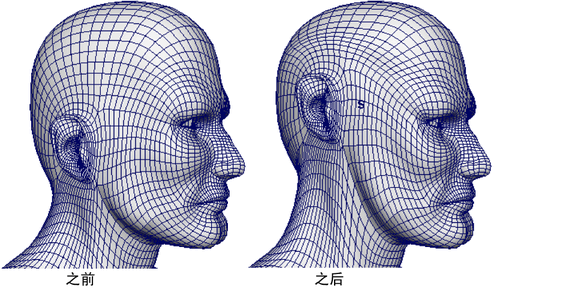
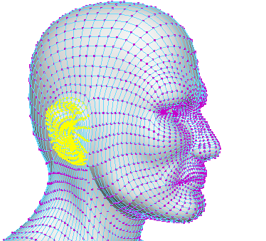
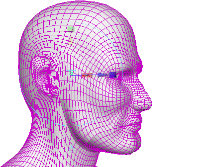

该示例显示了如何移动角色的耳朵，使耳朵周围的蒙皮发生调整以适应耳朵的新位置。

- 选择要移动的耳朵顶点和周围蒙皮。请确保选择头部两侧的耳朵顶点，以便使变形对称。
（选择周围的区域将发生变形，使移动的顶点自然融合到周围区域中。）
 - 在“装备”(Rigging)菜单集中，选择“变形 > 软修改”(Deform > Soft Modification) >
 ，然后设置以下内容：
，然后设置以下内容：
- 启用“保留历史”(Preserve History)
- 禁用“未选择遮罩”(Mask Unselected)
- 启用“在当前选择周围衰减”(Falloff Around Selection)
然后单击“软修改”(Soft Modification)。
- 使用操纵器移动耳朵（例如，向上）。

- 调整 softMod 属性（例如，“衰减半径”(Falloff Radius)、“衰减曲线”(Falloff Curve)）以交互式调整新耳朵位置混合到周围蒙皮中的方式。